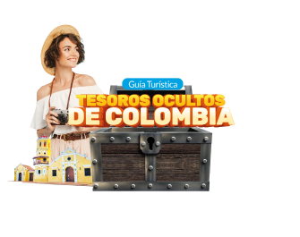
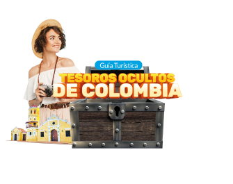

Cascada el fin del mundo en mocoa, putumayo
Explora la Maravilla Natural de la Cascada del Fin del Mundo en Mocoa, Putumayo
Bienvenido a un paraíso escondido en el corazón de la selva amazónica colombiana, donde la naturaleza cobra vida en su forma más majestuosa. La Cascada del Fin del Mundo, en Mocoa, Putumayo, es un destino turístico que te sumerge en la belleza prístina de la naturaleza y te brinda una experiencia inolvidable en medio de exuberantes paisajes y aguas cristalinas.
Descubre la Cascada del Fin del Mundo
Ubicada en el Parque Nacional Natural Munchique Putumayo, la Cascada del Fin del Mundo es un espectáculo impresionante de la naturaleza en su máxima expresión. Esta majestuosa cascada, con sus aguas transparentes que caen desde alturas vertiginosas, crea un ambiente mágico y sereno que te dejará sin aliento. Sumérgete en sus piscinas naturales para disfrutar de un baño refrescante y rejuvenecedor, rodeado del murmullo del agua y la exuberante vegetación tropical.
Aventuras en la Selva
La Cascada del Fin del Mundo no es solo un lugar para admirar desde lejos; es un destino para los amantes de la aventura. Embárcate en emocionantes caminatas por la selva que te llevarán a través de senderos serpenteantes, puentes colgantes y miradores panorámicos. Descubre la diversidad de la flora y fauna local, desde coloridas aves tropicales hasta plantas exóticas que solo se encuentran en esta región del mundo.
Experiencias Inolvidables
- Rituales Indígenas: Conoce la rica herencia cultural de las comunidades indígenas que habitan la zona. Participa en rituales tradicionales, aprende sobre las plantas medicinales y escucha las fascinantes historias que los nativos tienen para compartir sobre la cascada y su significado en su cultura.
- Avistamiento de Vida Silvestre: La biodiversidad en los alrededores de la Cascada del Fin del Mundo es asombrosa. Observa monos juguetones, mariposas multicolores y una variedad de reptiles mientras exploras la selva. Los amantes de la fotografía encontrarán innumerables oportunidades para capturar la belleza natural en su máxima expresión.
- Camping bajo las Estrellas: Experimenta la magia de la selva en la noche. Disfruta de noches de camping bajo un cielo estrellado y despiértate con el sonido melodioso de los pájaros al amanecer. Las fogatas y las historias compartidas alrededor del fuego crean recuerdos inolvidables.
Cómo Llegar
Para llegar a la Cascada del Fin del Mundo, puedes tomar un vuelo a Mocoa desde las principales ciudades colombianas y luego emprender un corto viaje en coche o en motocicleta hasta el parque nacional. A medida que te acerques al destino, la vegetación se volverá más densa y la emoción crecerá, anticipando la maravilla que te espera al final del camino.